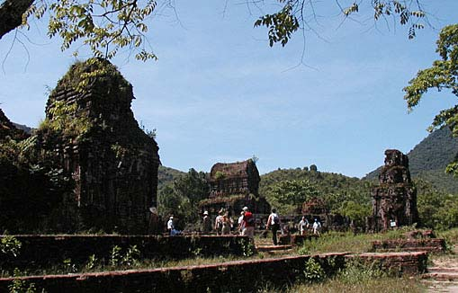
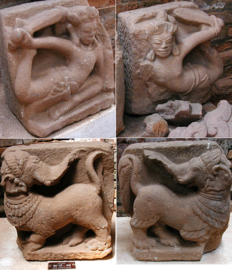
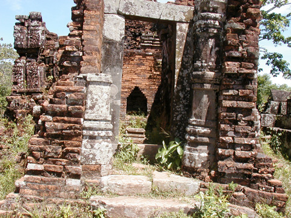
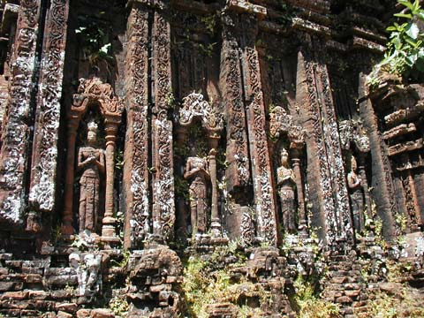
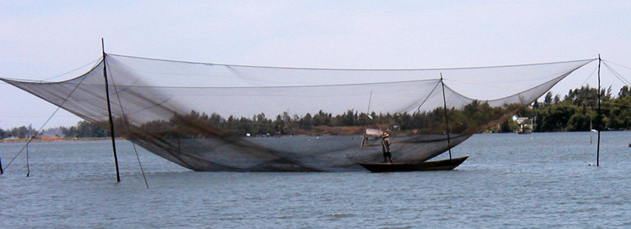

Viet Nam Trav-E-Logs©
| My Son
sent 8 July 2003 |
 |
| back: Hoi An | UNESCO World Heritage Site at My Son |
================================= This is such a short write-up, extra pictures were added to make up the difference. Hope everyone had a safe and enjoyable 4th of July! (That’s the American Independence Day Celebration, often associated with picnic, back-yard bar-b-q, swimming, and of course fireworks!) =================================
May 24, 2003
Just 25 Km from Hoi An is the ancient capital of My Son, another UNESCO World Heritage site. This is Viet Nam’s most important Cham site – with strong Hindu influence pre-dating the region-wide conversion to Buddhism. Other similar sites in South East Asia include Angkor Wat in Cambodia, Prambanan on the island of Java in Indonesia, Ayuthaya in Thailand, Wat Phu-Champasak in Laos, and Bagan in Myanmar. Even though the Laos site is smaller than the others, all share similar temple shapes and styles of construction. As the photos show, My Son is in perhaps the worst condition of all. It also seems to have missed the conversion to Buddhism as was the case with most of the other temples.
The composite photo shows several of the stone images at My Son. Below that, two photos show the general condition of the structure, and the best preserved wall of carvings at the site.
I was hoping to complete the goal of visiting all these sites on this trip, but alas, things are not looking good for visiting Myanmar now. Maybe things will change by early September ....

Next city is Hue, Viet Nam.

Enjoy!
Bill
------------------------------
Email me at the juno.com address "dancer2SEAsia"
"Travel is Fatal to Bigotry, Prejudice, and Narrow-minded ness" .... attributed to Mark Twain| next: Hue |
| back: Hoi An |